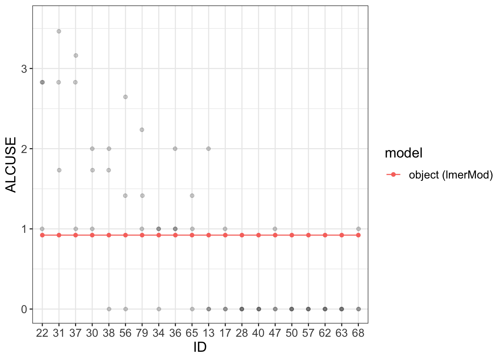
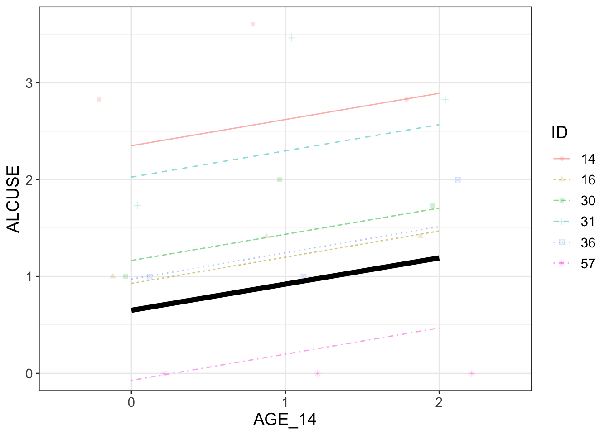
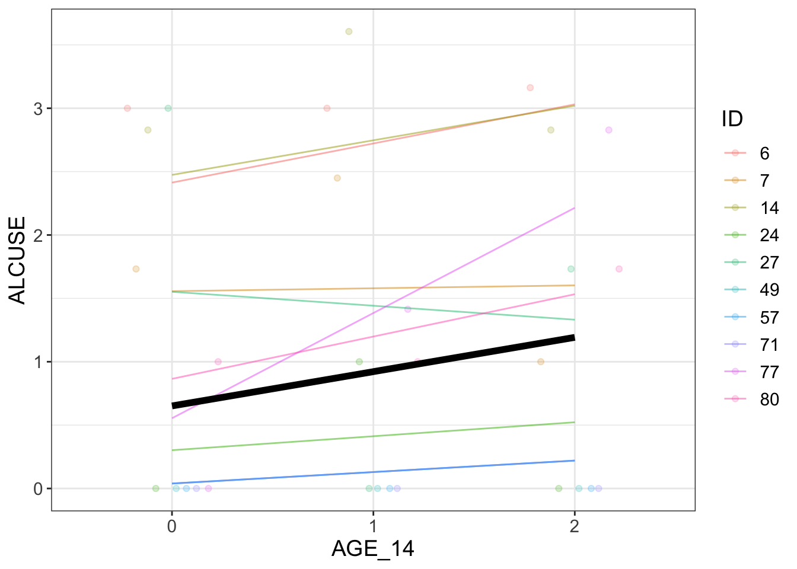

Some examples of using “flexplot” and “lmer” based on explanations from Dustin Fife (Video Link). Modified with tidyverse packages and plots (ggplot) to enable additional data understanding. My annotations and observations in line with code. Wrapped up in a Quarto package.
Example #1
require(flexplot)
Loading required package: flexplot
require(lme4)
Loading required package: lme4
Loading required package: Matrix
require(dplyr)
Loading required package: dplyr
Attaching package: 'dplyr'
The following objects are masked from 'package:stats':
filter, lag
The following objects are masked from 'package:base':
intersect, setdiff, setequal, union
Data about alcohol use in teenagers is distributed with flexplot.
# number of groups check # 3 measures for each IDnrow(filter(alcuse_sum, n_ALCUSE ==3))
[1] 82
Comments
There are 3 measurements of ALCUSE for each of 82 IDs.
Probably a boxplot is more useful to get a feel for the data (TODO)
summary(alcuse)
ID AGE COA MALE AGE_14
Min. : 1.0 Min. :14 Min. :0.0000 Min. :0.0000 Min. :0
1st Qu.:21.0 1st Qu.:14 1st Qu.:0.0000 1st Qu.:0.0000 1st Qu.:0
Median :41.5 Median :15 Median :0.0000 Median :1.0000 Median :1
Mean :41.5 Mean :15 Mean :0.4512 Mean :0.5122 Mean :1
3rd Qu.:62.0 3rd Qu.:16 3rd Qu.:1.0000 3rd Qu.:1.0000 3rd Qu.:2
Max. :82.0 Max. :16 Max. :1.0000 Max. :1.0000 Max. :2
ALCUSE PEER CPEER CCOA
Min. :0.000 Min. :0.0000 Min. :-1.0180000 Min. :-0.4510000
1st Qu.:0.000 1st Qu.:0.0000 1st Qu.:-1.0180000 1st Qu.:-0.4510000
Median :1.000 Median :0.8944 Median :-0.1235728 Median :-0.4510000
Mean :0.922 Mean :1.0176 Mean :-0.0004405 Mean : 0.0002195
3rd Qu.:1.732 3rd Qu.:1.5492 3rd Qu.: 0.5311934 3rd Qu.: 0.5490000
Max. :3.606 Max. :2.5298 Max. : 1.5118221 Max. : 0.5490000
Model of alcohol use. No predictors.
# Fixed effect + random effects# Fixed effect: ~1 is gammma 00# Random effects: 1 is Uij for ID mod =lmer(ALCUSE~1+ (1|ID), data=alcuse)visualize(mod, plot ="model", sample =20)
Coordinate system already present. Adding new coordinate system, which will
replace the existing one.

summary(mod)
Linear mixed model fit by REML ['lmerMod']
Formula: ALCUSE ~ 1 + (1 | ID)
Data: alcuse
REML criterion at convergence: 673
Scaled residuals:
Min 1Q Median 3Q Max
-1.8892 -0.3079 -0.3029 0.6111 2.8562
Random effects:
Groups Name Variance Std.Dev.
ID (Intercept) 0.5731 0.7571
Residual 0.5617 0.7495
Number of obs: 246, groups: ID, 82
Fixed effects:
Estimate Std. Error t value
(Intercept) 0.9220 0.0963 9.574
Comments
Dustin’s model visualize() plot does not look like this one despite the code being identical.
The visualize function defaults to 3 random IDs (?). I change it (with sample = n)
Looks like Dustin’s data is normalized to 1
Dustin gets Fixed Effect and Random Effects plotted. I just get: object (lmerMod).
However the summary(mod) is identical to Dustin’s.
# always useful to look this waysummary(mod)
Linear mixed model fit by REML ['lmerMod']
Formula: ALCUSE ~ 1 + (1 | ID)
Data: alcuse
REML criterion at convergence: 673
Scaled residuals:
Min 1Q Median 3Q Max
-1.8892 -0.3079 -0.3029 0.6111 2.8562
Random effects:
Groups Name Variance Std.Dev.
ID (Intercept) 0.5731 0.7571
Residual 0.5617 0.7495
Number of obs: 246, groups: ID, 82
Fixed effects:
Estimate Std. Error t value
(Intercept) 0.9220 0.0963 9.574
Comments
The model Intercept 0.9220 is simply the mean of the ALCUSE variable
signif(mean(alcuse$ALCUSE),4)
[1] 0.922
Random intercepts model
# random intercepts using AGE_14 as predictor for fixed IDs# AGE_14 predictor (fixed gradients)# (1|ID) tells intercepts may vary (random intercepts)rand.i <-lmer(ALCUSE~1+ AGE_14 + (1|ID), data = alcuse)# by default 3 IDs are plottedsample_n <-6# if all groups are plotted, one gets funny comments :)# very nice humour# sample_n <- 82visualize(rand.i, plot ="model", sample=sample_n)

summary(rand.i)
Linear mixed model fit by REML ['lmerMod']
Formula: ALCUSE ~ 1 + AGE_14 + (1 | ID)
Data: alcuse
REML criterion at convergence: 654.1
Scaled residuals:
Min 1Q Median 3Q Max
-2.19816 -0.66940 0.03001 0.44728 2.66167
Random effects:
Groups Name Variance Std.Dev.
ID (Intercept) 0.5966 0.7724
Residual 0.4915 0.7011
Number of obs: 246, groups: ID, 82
Fixed effects:
Estimate Std. Error t value
(Intercept) 0.65130 0.11077 5.880
AGE_14 0.27065 0.05474 4.944
Correlation of Fixed Effects:
(Intr)
AGE_14 -0.494
Comments
Fixed effect (Intercept) means 0.65130 drinks on average at age 14.
For subsequent years the number of drinks increases on average by 0.27065.
Random slopes (gradient) model
# unrealistic # -1 means intercept is fixed# need to consider the level 1 and 2 models to specify the syntax correctlyrand.s <-lmer(ALCUSE~1+ AGE_14 + (-1+ AGE_14|ID), data = alcuse)sample_n <-10visualize(rand.s, plot ="model", sample=sample_n)
It looks like you're trying to plot more than 6 colors/lines/symbols.
I gotta give it to you...you're ambitious. Alas, I can't do that, so I'm removing the colors/lines/symbols.
I hope we can still be friends.
summary(rand.s)
Linear mixed model fit by REML ['lmerMod']
Formula: ALCUSE ~ 1 + AGE_14 + (-1 + AGE_14 | ID)
Data: alcuse
REML criterion at convergence: 697.6
Scaled residuals:
Min 1Q Median 3Q Max
-1.5231 -0.7636 -0.4583 0.4239 3.1493
Random effects:
Groups Name Variance Std.Dev.
ID AGE_14 0.2225 0.4717
Residual 0.7163 0.8463
Number of obs: 246, groups: ID, 82
Fixed effects:
Estimate Std. Error t value
(Intercept) 0.65130 0.08532 7.634
AGE_14 0.27065 0.08415 3.216
Correlation of Fixed Effects:
(Intr)
AGE_14 -0.608
Comments
Despite the warning, visualize seems to do the job with 10 samples
Random slopes and intercepts model
# probably what we want# need to consider the level 1 and 2 models to specify the syntax correctlyrand.is <-lmer(ALCUSE~1+ AGE_14 + (AGE_14|ID), data = alcuse)sample_n <-10visualize(rand.is, plot ="model", sample=sample_n)
It looks like you're trying to plot more than 6 colors/lines/symbols.
I gotta give it to you...you're ambitious. Alas, I can't do that, so I'm removing the colors/lines/symbols.
I hope we can still be friends.

summary(rand.is)
Linear mixed model fit by REML ['lmerMod']
Formula: ALCUSE ~ 1 + AGE_14 + (AGE_14 | ID)
Data: alcuse
REML criterion at convergence: 643.2
Scaled residuals:
Min 1Q Median 3Q Max
-2.48287 -0.37933 -0.07858 0.38876 2.49284
Random effects:
Groups Name Variance Std.Dev. Corr
ID (Intercept) 0.6355 0.7972
AGE_14 0.1552 0.3939 -0.23
Residual 0.3373 0.5808
Number of obs: 246, groups: ID, 82
Fixed effects:
Estimate Std. Error t value
(Intercept) 0.65130 0.10573 6.160
AGE_14 0.27065 0.06284 4.307
Correlation of Fixed Effects:
(Intr)
AGE_14 -0.441

Comments
There are 3 measurements of ALCUSE for each of 82 IDs.
Probably a boxplot is more useful to get a feel for the data (TODO)